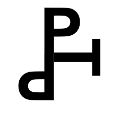

About PTP
Pressure Temperature Pain
PTP is een totaalproject waarin negen series schilderijen, objecten, teksten en fotografische registraties met elkaar in verband worden gebracht. De installatie werkt als een 3 x 3 grid: geen neutrale ordening, maar een denkruimte waarin ieder werk zijn positie krijgt door de relatie tot de andere werken. Het raster maakt zichtbaar hoe de afzonderlijke series elkaar aantrekken, tegenspreken en activeren.
Het vertrekpunt van alle series en hun onderlinge betekenis zijn de Skin-paintings: schilderijen van menselijke huid. De doeken zijn monochroom, opgespannen, soms licht bol of hol. Ze beelden geen lichaam af, maar zijn zelf huid: een gevoelig oppervlak dat de wereld voelt voordat die wordt benoemd. Vanuit dit centrum ontvouwen de andere acht series zich.
Van links naar rechts lopen de kolommen Unborn, Real, Entropy. Deze as, URE, beschrijft een beweging van ontstaan naar verschijnen en ontbinding: het ongeborene als ongrond of potentie, het werkelijke als de vorm die zichtbaar en kenbaar wordt, en entropie als het moment waarop vorm, taal, lichaam en betekenis weer uiteenvallen. URE is daarmee een model van leven: ongeboren, leven, dood. Niet als rechte tijdlijn, maar als een voortdurend proces waarin oorsprong, aanwezigheid en verdwijnen tegelijk aanwezig blijven.
Van boven naar beneden lopen de rijen Pressure, Temperature, Pain. Deze as vertrekt vanuit de huidzintuigen: druk, temperatuur en pijn zijn primaire lichamelijke manieren waarop de wereld zich aan ons opdringt. Maar in dit project worden die zintuiglijke categorieen ook psychologisch en politiek gelezen. Pressure is niet alleen fysieke druk op de huid, maar ook stress, macht, ideologie en maatschappelijke dwang. Temperature is niet alleen warmte of kou, maar stemming, affect, nabijheid, energie en atmosfeer. Pain is niet alleen pijn als lichamelijk signaal, maar ook trauma, verlies, historische last en confrontatie met het rauwe bestaan.
In het midden van het grid staat de serie Skin-paintings als grens en schakel: tussen binnen en buiten, tussen het individuele lichaam en de wereld, tussen psychische ervaring en fysieke werkelijkheid. Het huidvlak wordt hier een sensitief membraan. Het weigert een voorstelling toe te voegen en maakt juist het oppervlak zelf tot drager van bestaan.
Rondom dit centrum ontstaan de andere series als afgeleiden, tegenkrachten en uitbreidingen. Symbol en Flag onderzoeken hoe abstracte vormen, kleuren en tekens worden geladen met ideologie, macht en collectieve identiteit. Text behandelt taal als materiaal en als systeem dat de werkelijkheid structureert, maar ook kan versplinteren tot klank, herhaling en ruis. Internal richt zich op binnenhuid, vliezen, organen en kwetsbare biologische grenzen. Noise toont materie als energie, trilling en ongrond: het veld waaruit beeld en waarneming kunnen ontstaan maar ook weer in uiteenvallen. Ready Made en Outside brengen de rauwe buitenwereld binnen als tekens van bestaan, trauma, afval, toeval en vergankelijkheid.
Het PTP totaalbeeld verbindt zo het fysieke met het psychische en het politieke. De huid is het lichamelijke beginpunt, maar ook een model voor bewustzijn: een kennend vlies dat de wereld voelt voordat die wordt benoemd. De installatie leest de mens niet als gesloten individu, maar als lichaam onder invloed: geraakt door materie, gevormd door taal, belast door geschiedenis, ingeschreven in symbolen en blootgesteld aan druk. Het project onderzoekt hoe schilderkunst een plaats kan zijn waar die krachten niet worden opgelost, maar zichtbaar naast elkaar blijven bestaan.
Hoofdstuk 1: Het beeld tussen de werken
Het werkelijke beeld van PTP ontstaat niet alleen binnen de afzonderlijke schilderijen, objecten, teksten of foto's, maar juist tussen de werken in. In de installatie-opstelling wordt ieder werk een element in een groter veld. De cijfers 1 tot en met 9 verwijzen daarom niet alleen naar afzonderlijke series, maar naar plaatsen binnen het grid: posities in een denkraam waarin elk werk vanuit zijn buren, tegenpolen en diagonale verbanden kan worden gelezen. Eerst ontstaan er bewegingen door het grid: groeperingen van telkens drie reeksen, horizontaal en verticaal gelezen, tonen hoe de afzonderlijke posities inhoudelijk met elkaar verbonden zijn.
Verticaal
Verticaal gelezen vormt de kolom Unborn een beweging door 1, 4 en 7: Symbol, Internal en PTP. Daarin kan de binnenhuid of het vlies van Internal worden gelezen als het bevlezen van het skelet van Symbol: een lichaam van tekens dat nog niet volledig tot werkelijkheid is geworden, maar als structuur, aanleg of oorsprong aanwezig is. De plaats van PTP in het grid, positie 7, is daarom belangrijk: hier verschijnt PTP als samenvoeging, als conceptuele serie en als veld waarin werken uit verschillende reeksen opnieuw kunnen worden gecombineerd.
De kolom Real, 2, 5 en 8, verbindt Flag, Skin en Ready Made. De vlag staat voor nationale identiteit en het land als lichaam; de huid-schilderijen staan voor de persoonlijke, individuele mens; het object of de ready made staat voor het ding, de werkelijkheid en de omgeving. In deze verticale lezing wordt Real niet alleen zichtbaar als afbeelding van de werkelijkheid, maar als een reeks lichamen: landlichaam, menselijk lichaam en objectlichaam.
De kolom Entropy, 3, 6 en 9, verbindt Text, Noise en Outside. Text kan hier worden gelezen als de ruis van denken, identificatie en taal; Noise als de materiele entropie waarin vorm, beeld en energie uiteenvallen; Outside als de straat, waar objecten hun functie verliezen en als afval, sporen of toevallige conjuncties opnieuw verschijnen. Deze entropische beweging valt tegelijk samen met PTP op positie 7: samenstellingen van werken zijn niet alleen ontbinding, maar ook een nieuwe ongrond waaruit andere beelden kunnen ontstaan.
Horizontaal
Horizontaal gelezen vormt de rij Pressure, 1, 2 en 3, een veld van politieke en ideologische druk. Symbol, Flag en Text tonen hoe tekens, vlaggen, grondwetten, verklaringen en publieke taal de mens vormen. Hier wordt druk niet alleen lichamelijk opgevat, maar als maatschappelijke kracht: de druk van symbolen, nationale identiteit, juridische taal en collectieve afspraken op het denken en handelen van het individu.
De rij Temperature, 4, 5 en 6, richt zich op het lichamelijke. Internal toont het onzichtbare binnenlichaam van vliezen, organen en ingewanden; Skin vormt het zichtbare huidlichaam waarop wij kijken en waardoor wij de wereld voelen; Noise laat dat lichaam weer opgaan in ruis, energie en materiele trilling. Temperature is hier de sfeer van het lichaam zelf: warmte, huid, binnenkant, massa en overgang.
De rij Pain, 7, 8 en 9, beweegt van symbolische betekeniswereld naar realiteit en ontbinding. PTP op positie 7 verzamelt en herordent de werken als conceptuele samenstelling; Ready Made op positie 8 brengt de directe realiteit van objecten binnen; Outside op positie 9 toont het uiteenvallen van objecten op de grond, als afval, sporen, toevallige samenstellingen en het uiteendrijven van de wereld.
Samenstellingen
Een noise-schilderij naast een tekstwerk, een vlag naast een huid, een ingewanden-painting naast een fotografisch beeld van de buitenwereld: zulke combinaties maken nieuwe betekenissen zichtbaar die in de losse series nog niet volledig aanwezig zijn.
Wanneer verschillende series worden samengevoegd of gecombineerd, ontstaan nieuwe werken en betekenissen. De installatie is daardoor geen presentatie achteraf, maar een actieve methode om beelden te maken. Series kunnen elkaar raken, kruisen, versterken of ontregelen. Uit die ontmoetingen ontstaan conceptuele series en concept works: uitwerkingen van thematiek, nieuwe associaties, tijdelijke verbanden en samengestelde beelden waarin elementen uit meerdere reeksen tegelijk werkzaam zijn.
Een schilderij kan zo functioneren als huid, teken, drukvlak, membraan, wond, object of fragment van taal, afhankelijk van de werken waarmee het wordt gecombineerd. Beeldelementen uit verschillende series kunnen onderling worden verbonden tot een nieuw beeld. De betekenis verschuift dan van het autonome werk naar de constellatie: het beeld wordt een netwerk van relaties, waarin de positie, afstand, herhaling en confrontatie tussen werken even belangrijk worden als het individuele object zelf.
Daarmee wordt PTP ook een open systeem. De installatie kan worden uitgebreid met websites, QR-codes, geluid, video en digitale lagen die bij de fysieke opstelling horen. Een bezoeker kan via een QR-code naar aanvullende tekst, bewegend beeld of geluid gaan. Het telefoonscherm wordt dan een extra drager binnen de installatie: een extra doek, een extra muur, een extra ruimte waarin beeld, geluid, internet en tekst aan het fysieke werk worden toegevoegd.
In die uitbreiding blijft het grid het organiserende principe. PTP kan groeien als installatie, archief, boek, website en denkmodel tegelijk: een project waarin schilderkunst niet ophoudt bij het doek, maar zich uitbreidt naar ruimte, taal, scherm en geluid.
In de hoofdstukken hierna worden de verhouding tussen URE en PTP, en de politieke en psychologische betekenislaag van het werk, stap voor stap verder uitgewerkt.